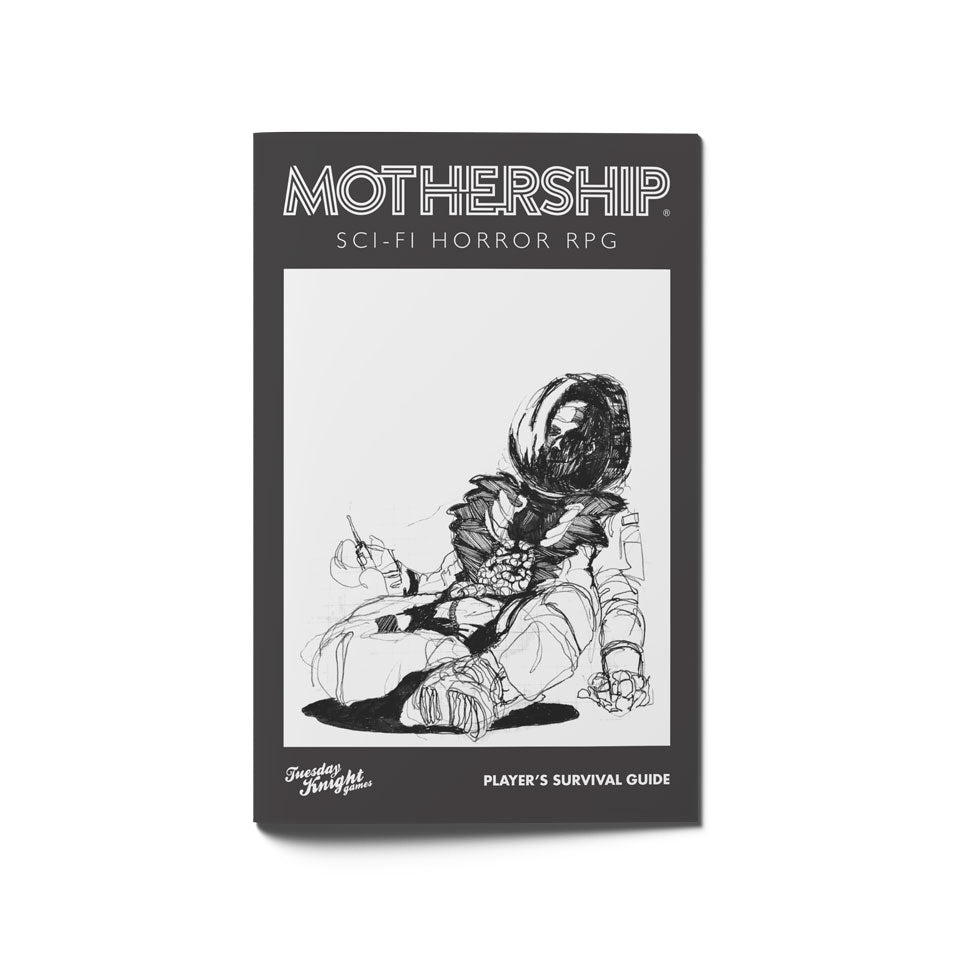

Sci-fi horror · 1st edition
Mothership
A science-fiction horror roleplaying game about vulnerable people facing danger far from safety.

Official cover source ↗
What's it like?
The first-edition Player's Survival Guide provides character creation, equipment, and straightforward percentile rules. Failed rolls build Stress, and Panic can turn a bad situation into a crisis. Violence is dangerous, making planning, teamwork, and knowing when to retreat central to play.
Why I'm considering it
It could be a great fit for a tense change of pace from fantasy. Fast character creation and a strong focus on survival would let us jump into an unsettling situation and see how our crew handles the pressure.